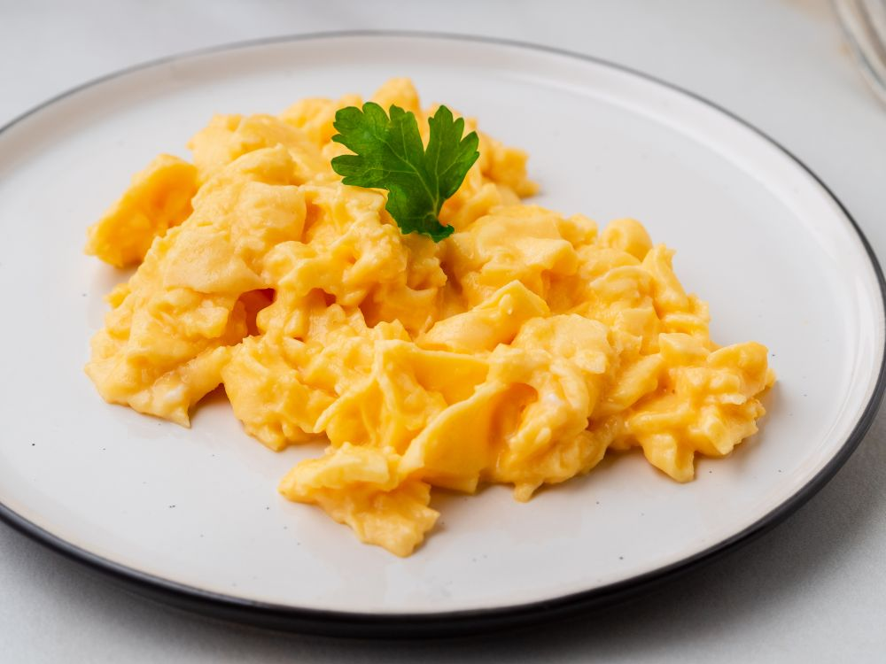
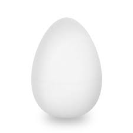
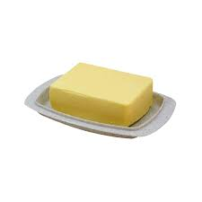
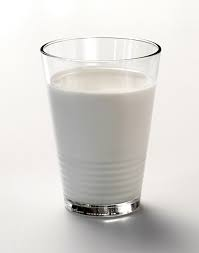

Ovos mexidos para qualquer hora do dia
Ovos mexidos de café da manhã são uma opção ótima para te dar aquele gostinho de café da amanhã de hotel! Confira agora mesmo como preparar!
Ingredientes (2 porções)
-

- 4 ovos 
- 1 colher (sopa) de manteiga
-

- 100 ml de leite
- sal

Modo de Preparo
- Passe toda a manteiga no fundo de uma frigideira e coloque os ovos sobre a manteiga.
- Em seguida, quebre as gemas sem mexer os ovos.
- Só depois deste passo, leve a frigideira para o fogo com fogo baixo.
- A clara vai cozinhar primeiro que a gema.
- Quando a gema começar a ficar cozida, acrescente o leite e mexa vigorosamente para misturar a manteiga do fundo da frigideira e o leite.